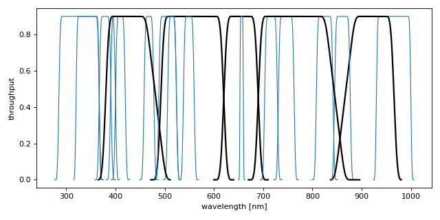

dustapprox.literature package
Contents
dustapprox.literature package#
Literature Extinction approximations#
We provide multiple literature approximations with this package.
dustapprox.literature.edr3.edr3_extprovides the Riello et al. (2020) approximation, i.e., extinction coefficient \(k_x = A_x / A_0\) for Gaia eDR3 passbands (G, BP, RP).Warning
Their calibration only accounted for solar metallicity.
dustapprox.literature.c1.dr3_extprovides the Bellazzini et al. (2022) approximation, i.e., extinction coefficient \(k_x = A_x / A_G\) for Gaia \(C1\) passbands (defined in Jordi et al (2006)).Warning
Their relations use \(A_G\), not \(A_0\) as input.
Submodules#
dustapprox.literature.c1 module#
Coefficients of the reddening laws to correct magnitudes in the \(C1\) system.
The \(C1\) Gaia photometric system#
The original design for Gaia included a set of photometric filters (see Jordi et al., 2006), the C1B and C1M systems for the broad and medium band passbands, respectively. The C1 system was specifically desgined to maximize the scientific return in terms of stellar astrophysical parameters.
The C1B component has five broad passbands covering the wavelength range of the unfiltered light from the blue to the far-red (i.e. 400-1000 nm). The basic response curve of the filters versus wavelength is a symmetric quasi-trapezoidal shape. The filter designs represent a compromise between the astrophysical needs and the specific requirements for chromaticity calibration of Gaia.
The C1M component consists of 14 passbands. Their basic response curves are symmetric quasi-trapezoidal shapes as well.
Eventually, construction and budget constraints led ESA to adopt prisms in the final design of Gaia, which cover for those passbands.
For example \(C1M467-C1M515\) color is sensitive to surface gravity (\(\log g\)) and \(C1B556-C1B996\) is sensitive to the effective temperature \(T_{eff}\).
Comments on the Passbands and colors (see details in Sect. 5.1 of Jordi et al., 2006)
C1B431: similar to that of a Johnson’s B passband.
C1B556: similar to that of a Johnson’s V passband.
C1B768: similar to that of a Cousin’s I passband, SDSS i prime, or HST F814W
C1M326: is affected by strong metallicity dependent absorption lines.
C1M379: corresponding to the higher energy levels of the Balmer series.
C1M395: mainly to measure the Ca II H line
C1M467: similar to Strömgren b
C1M549: similar to Strömgren y
C1M515: dominated by Mg I triplet and the MgH band.
C1M656: is a direct Halpha line measurement.
C1M716: dominated by TiO (713 nm)
C1M825: mostly the strong Carbon-Nitrogen (CN), but also weak TiO bands
C1B431-C1B556: is similar to Johnson’s B-V.
C1B556-C1B768: is similar to a V-I color, HST F555W-F814W.
C1B655-C1M656: forms an Halpha index
C1B768-C1B916: strength of the Paschen jump.
C1M326-C1B431: is a Balmer jump index, function of Teff and log g
C1M326-C1M410: is a Balmer jump index, function of Teff and log g
C1M379-C1M467: is a metallicity index.
C1M395-C1M410: correlates with W(CaT*), i.e. the equivalent width of the Calcium triplet (in RVS).
C1M395-C1M515: (and similar indices) allows to disentangle Fe and alpha-process element abundances.
C1M716-C1M747: is an index for the presence and intensity of TiO.
C1M861-C1M965: is an index of gravity-sensitive absorption of the high member lines of the Paschen series.
C1B556-C1B768, C1B556-C1B916, C1B768-C1B916 indices can allow for the separation of cool oxygen-rich (M) and carbon-rich (N) stars (for dust-free stars).
C1M395-C1M410 vs. W(CaT*) may be used as a log g estimator.
C1M825-C1M861 vs. C1M861-C1M965 helps separating M-, R- and N-type stars
C1 passbands transmission curves#
The C1 passbands are available from Jordi et al., 2006.
For convenience, we also provide them with this package in dustapprox/data/Gaia2 directory in the pyphot ascii format.
from pkg_resources import resource_filename
from pyphot.astropy import UnitAscii_Library
where = resource_filename('dustapprox', 'data/Gaia2')
lib = UnitAscii_Library([where])
lib['C1B556'].info()
The last line of the above example shows the information of the C1B556 passband.
Filter object information:
name: C1B556
detector type: photon
wavelength units: nm
central wavelength: 556.000128 nm
pivot wavelength: 554.743690 nm
effective wavelength: 548.702778 nm
photon wavelength: 551.180067 nm
minimum wavelength: 481.000000 nm
maximum wavelength: 631.000000 nm
norm: 115.200850
effective width: 128.000944 nm
fullwidth half-max: 0.500000 nm
definition contains 337 points
Zeropoints
Vega: 21.142893 mag,
3.490138982485388e-09 erg / (Angstrom cm2 s),
3582.669614072932 Jy
879.1910941155257 ph / (Angstrom cm2 s)
AB: 21.128410 mag,
3.5370073412867404e-09 erg / (Angstrom cm2 s),
3630.780547700996 Jy
ST: 21.100000 mag,
3.6307805477010028e-09 erg / (Angstrom cm2 s),
3727.0398711607527 Jy
import pylab as plt
from pkg_resources import resource_filename
from pyphot.astropy import UnitAscii_Library
where = resource_filename('dustapprox', 'data/Gaia2')
lib = UnitAscii_Library([where])
pbs = lib.load_all_filters()
plt.figure(figsize=(8, 4))
for pb in pbs:
if pb.name.startswith('C1B'):
kwargs = dict(color='k', lw=2)
else:
kwargs = dict(color='C0', lw=1)
plt.plot(pb.wavelength.to('nm'), pb.transmit, **kwargs)
plt.xlabel('wavelength [nm]')
plt.ylabel('throughput')
plt.tight_layout()
plt.show()
(Source code, png, hires.png, pdf)
{kind=link}
{kind=link}

C1 passband transmission curves. Black and blue lines indicate the C1B and C1M passbands, respectively.#
Model from Bellazzini et al. (2022; Gaia DR3)#
The procedure is detailed in the appendix E of Bellazzini et al. (2022).
In brief, they fit polynomial relations to predicted SED values. The simulated predictions originate from the BTSettl atmosphere library combined with the \(C1\) passbands definitions and the Fitzpatrick extinction curve.
They derive the absorption in any \(X\) band as a function of the absorption in \(G\), \(A_G\), the Gaia \(G_{BP}-G_{RP}\) color:
Warning
Those relations depend on \(A_G\), not \(A_0\).
- class dustapprox.literature.c1.dr3_ext(data='gaia_C1_extinction.ecsv')[source]#
Bases:
objectFunction to get the extinction coefficients A_X / A_G in C1 system
The procedure is detailed in the appendix E of Bellazzini et al. (2022).
- Parameters
name (str) – The name of the X band
bprp (float or array) – The Gaia G_BP - G_RP color
ag (float or array) – The Gaia A_G value
- Returns
A_X / A_G – The extinction coefficients
- Return type
float or array
dustapprox.literature.edr3 module#
Provide extinction coefficient \(k_x = A_x / A_0\) for Gaia eDR3 passbands (G, BP, RP).
Data and equations taken from: https://www.cosmos.esa.int/web/gaia/edr3-extinction-law
Extinction coefficients depend on the source spectral energy distribution and on the extinction itself (e.g., Gordon et al., 2016; Jordi et al., 2010).
Following the method presented in Danielski et al. (2018), DPAC computed the extinction coefficient in the \(x\) band
with \(A_0\) the extinction at \(550 nm\), as a function of the star’s intrinsic color or effective temperature (both denoted by \(X\)):
Riello et al. (2020) fit the above formula on a grid of extinctions obtained by convolving the Gaia eDR3 passbands with Kurucz spectra (Castelli & Kurucz, 2003) and the Fitzpatrick et al. (2019) extinction curve. They constructed a grid with \(3500 K < T_{eff} < 10000 K\) in steps of \(250 K\), and \(0.01 < A_0 < 20 mag\) with a step linearly increasing with \(0.01 mag\).
Warning
Their work only include solar metallicity.
Note
The work cannot be reproduced from the information contained on the webpage only.
Internally, they did a fit for main-sequence stars (\(log g > 4.5\)) and for the upper HR diagram (giants, upper MS, etc.) up to \(M_G \sim 5 mag\).
- class dustapprox.literature.edr3.edr3_ext[source]#
Bases:
objectprovide extinction coefficient \(k_x = A_x / A_0\) for Gaia eDR3 passbands (G, BP, RP)
This class provides a simple access to their expressions for \(X=(G_{BP}-G_{RP})_0, (G-K)_0\), and \(T_{eff}\), and for the bands \(m = G, GBP, GRP\), and \(J, H\), and \(Ks\), corresponding to the 2MASS passbands. The fit itself has a maximum uncertainty of 3.5%, 1.5%, and 1% in the \(G, G_{BP}\), and \(G_{RP}\) bands, respectively.
Note
The relations with temperature use internally \(T_{eff}^{Norm} = T_{eff} / 5040 K\), but the function argument is \(T_{eff}\) for simplicity.
Data taken from: https://www.cosmos.esa.int/web/gaia/edr3-extinction-law
- from_GmK(name: str, gmk: Union[float, Sequence[float], numpy.array], a0: Union[float, Sequence[float], numpy.array], flavor: str = 'top') Union[float, Sequence[float], numpy.array][source]#
Relation based on G-Ks of the source
- Parameters
name (str) – The name of the band (‘G’, ‘BP’, or ‘RP’)
gmk (float or array_like) – The G-Ks color values
a0 (float or array_like) – The value of the extinction at 550 nm
flavor (str) – The type of the data to be used (‘top’ or ‘ms’)
- Returns
The extinction coefficient A_x / A_0
- Return type
float or array_like
- from_bprp(name: str, bprp: Union[float, Sequence[float], numpy.array], a0: Union[float, Sequence[float], numpy.array], flavor: str = 'top') Union[float, Sequence[float], numpy.array][source]#
Relation based on BP-RP of the source
- Parameters
name (str) – The name of the band (‘G’, ‘BP’, or ‘RP’)
bprp (float or array_like) – The \(G_{BP} - G_{RP}\) color values
a0 (float or array_like) – The value of the extinction at 550 nm
flavor (str) – The type of the data to be used (‘top’ or ‘ms’)
- Returns
The extinction coefficient A_x / A_0
- Return type
float or array_like
- from_teff(name: str, teff: Union[float, Sequence[float], numpy.array], a0: Union[float, Sequence[float], numpy.array], flavor: str = 'top') Union[float, Sequence[float], numpy.array][source]#
Relation based on temperature of the source
- Parameters
name (str) – The name of the band (‘G’, ‘BP’, or ‘RP’)
teff (float or array_like) – The values of \(T_{eff}\)
a0 (float or array_like) – The value of the extinction at 550 nm
flavor (str) – The type of the data to be used (‘top’ or ‘ms’)
- Returns
The extinction coefficient A_x / A_0
- Return type
float or array_like